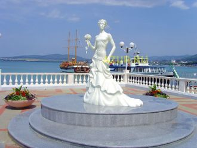

Não consigo olhar no fundo dos seus olhosE enxergar as coisas que me deixam no ar, deixam no arAs várias fases, estações que me levam com o vento
Diz pra eu ficar muda faz cara de mistérioTira essa bermuda que eu quero você sérioTramas do sucesso mundo particular
Son las cinco de la mañana y yo no he dormido nadaPensando en tu belleza en loco voy a pararEl insomnio es mi castigo, tu amor será mi alivio
I won't let you downWon't let you down againI won't let you downWon't let you down againI won't let you downWon't let you down again
I've been thinking 'bout,All things I'm searching for20 years from now, boy we could've done it all
Quiero volar contigo, muy alto en algún lugar quisiera estar contigo viendo las estrellas sobre el mar quiero encontrar otro camino ponerme mi vestido
A una parte de mi Le falta luz La otra parte esta Totalmente oscura A una parte de mí Le falta sensibilidad
Я иду, а звёзды катятся.Сколько дней из жизни тратится,Чтобы делать то, что не нравится,Даже не представить!

Как хорошо вдоль бухты ГеленджикскойПройтись по набережной вечерком,Увидеть маяка огонь неблизкий,Цикад услышать в сумраке ночном.
Наша встреча повторилась, и вновь Говорили, как же сладка любовь,Что не нужно понимать в ней слова иногда!Если любишь, ни о чём не жалей,
Турэл Буряадайм Байгал далайТуби дэлхэйгээр суурханхай,Эбхэрмэ гое долгинуудааЭрье дээгуур сасана.
На небе много лучезарных звезд, но есть одна прекрасная.Солнышко наше красное, свети на радость нам, свети всегда (2 раза)
Цаст хайрхан хөвч хангай элсэн манханЦагийн уртад хувираагүй эгэл төрхтэйУул ус, ургамал амьтан буурал дээдэс минь
Санахын эрхээр чамдааЗахидал бичиж суунаСан байна уу хайрт миньГэж зурхэндээ шивнэлээХуссэн сэтгэл мөрөөдлийн хязгааргуй ч
Певучий голос раздаётся.Зал аплодирует. Стихает. Вокал от сердца – в сердце льётся.На сцене выступает Тая.Всегда поёт без фонограммы!
ooooo-oo-oo-oo-ooooAlt du gjør stiller meg i transe,jeg blir glad kjenner kroppen danse,det ekke bare bare det.
Global DeejaysParisLondonL.AChicagoTokyoBagdadNew YorkHear the Global Deeyas
Touching (Touching) x10
Dream....
Быть моряком – стезя такая!Вам – благодарность и почет!По венам вашим соль морскаяИ доблесть прадедов течет!
Крошечный кораблик солнца,
Маленькое судно бури,
Эта страсть не разойдется -
Мы любовь сейчас черпнули.
Мимо медленной реки,